Bereik je fitnessdoelen met de Nike
Training Club (NTC) app. Met de NTC app
krijg je toegang tot meer dan 200 gratis
work-outs en gerichte trainingsschema's,
en stap-voor-stap begeleiding. Je vindt
altijd een work-out die bij jou past,
of het nu gaat om uitdagende yogalessen
of lichaamsgewichtsessies, met of zonder
materialen. Doe mee en volg het
gevarieerde trainingsaanbod van onze
Nike Master Trainers. De duur van de
sessies varieert van 5 tot 50 minuten en
je kunt meedoen wanneer en waar je maar
wilt, thuis, in de sportschool, of buiten.
En onze gratis videobibliotheek blijft groeien.
Er zullen steeds nieuwe video's bij komen.
Het maakt niet uit of je al veel of nog weinig
conditie hebt, NTC geeft je alles wat je nodig
hebt om verder te komen.
We nemen work-outs voor thuis heel serieus.
Met NTC beweeg je, zweet je, en voel je
je sterker. En dat doe je gewoon lekker
thuis. Doe mee met NTC Live, ontdek onze
bibliotheek met gratis work-outs en
laat je adviseren door
. Wees welkom bij een community
van atleten net als jij.
Je favoriete app voor in de sportschool
Als je het liefst in de sportschool traint, dan kun je best een app gebruiken die je training uitdagend
houdt. NTC geeft je toegang tot trainingsschema's en hulp van experts, en zorgt ervoor dat je gewoon
door kan gaan met kracht- en conditietraining, omdat je weet dat je in goede handen bent.
NTC biedt
gevarieerde work-outs, van cardio tot gerichte krachttraining, en zorgt ervoor dat je alle aanwezige
sportschoolmaterialen optimaal kunt gebruiken. NTC registreert niet alleen je prestaties, maar is je
nieuwe favoriete coach.
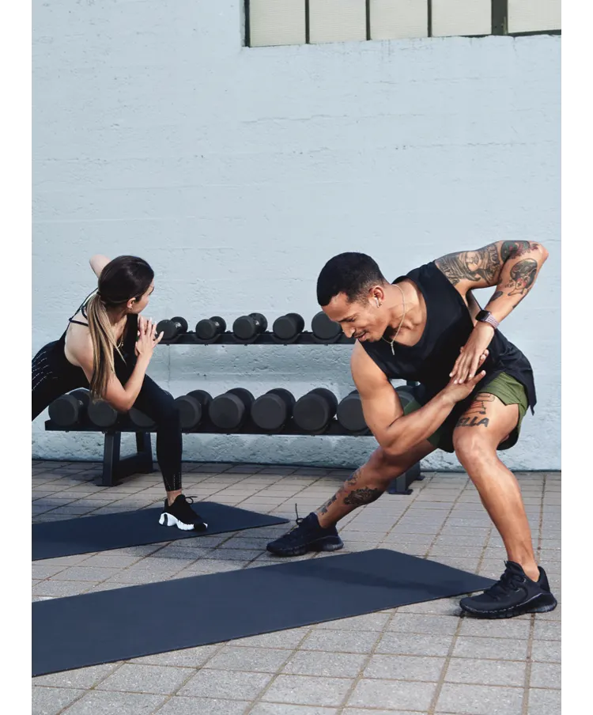
Waarom de Nike training club?
Met je eigen Nike personal trainer bij de hand, kun je net dat stapje extra zetten. Het maakt niet uit of
je net begint of gewoon je conditie wilt verbeteren. NTC helpt je om verder te komen.
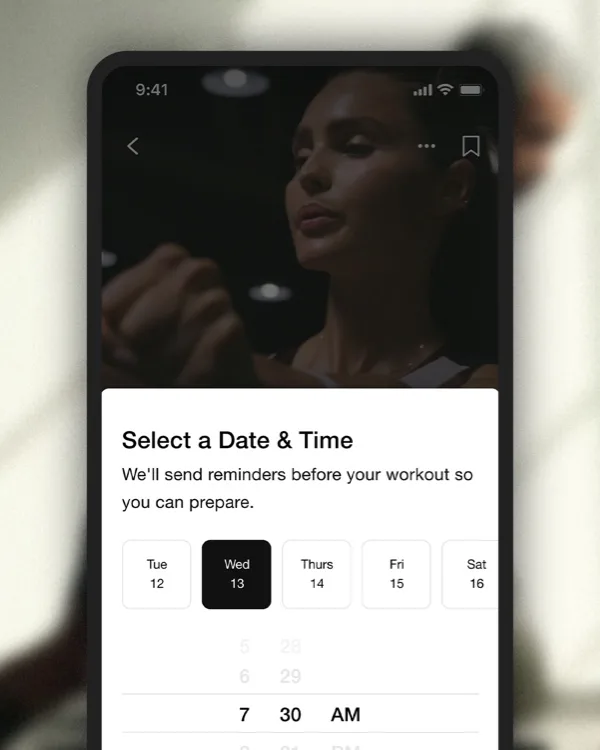
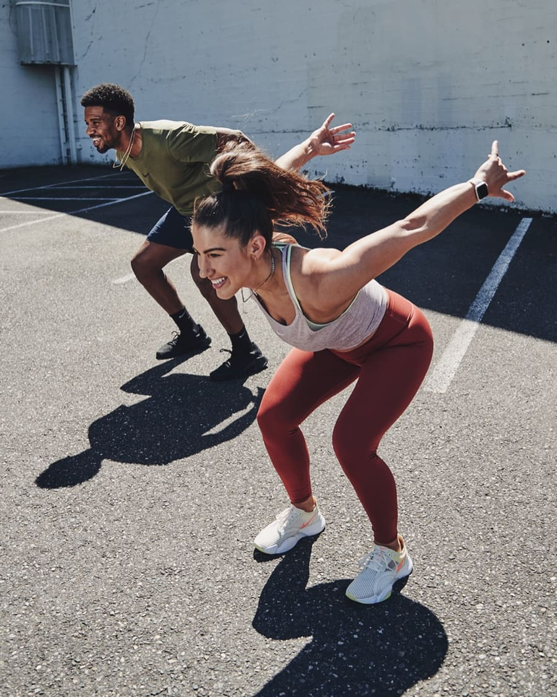
Je work-outs plannen:
Hard trainen:
Gemotiveerd plannen:
Stel jouw ideale trainingsschema samen
Verbeter kracht en conditie met work-out- video's
Houd je voortgang bij en vier je successen
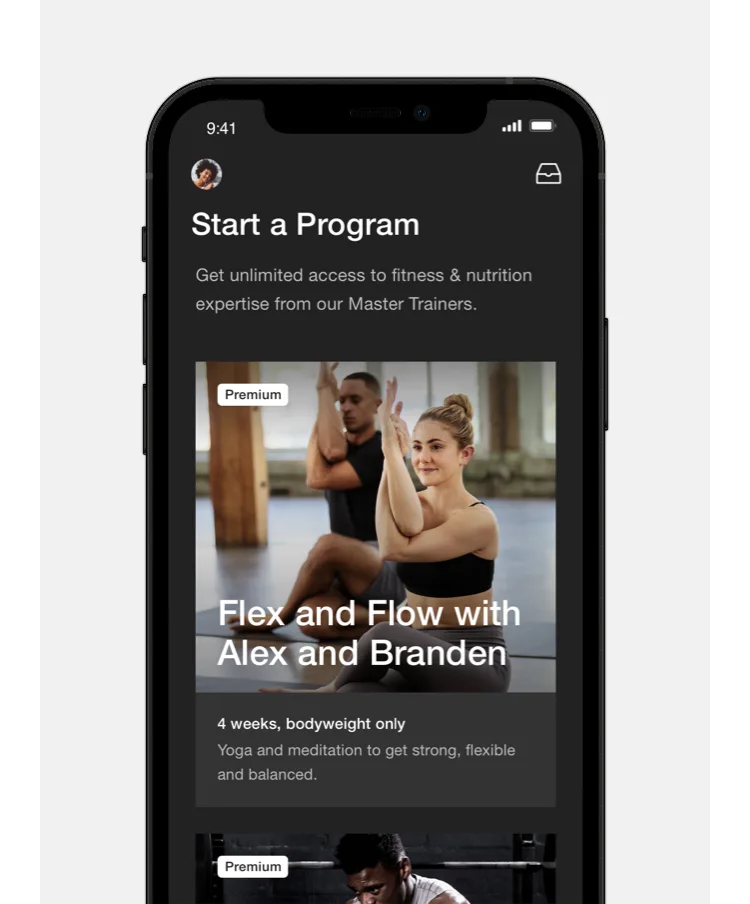
Flexibele trainingprogramma's speciaal voor jou
Begin met een persoonlijk, begeleid trainingsschema
dat aansluit op je voortgang, planning en andere activiteiten. Met NTC krijg je toegang tot vier
trainingsschema's van 4 tot 6 weken. Of je nu naar een goed uitgeruste sportschool gaat of traint vanuit
je eigen huis, er is altijd een routine die bij jou past en aansluit op jouw planing, zodat je je doelen
kunt behalen.
Onze meerweekse schema's begeleiden je niet alleen bij de work-outs, maar geven je ook advies over
wellness en voeding*. Wat voor atleet je ook bent, je vindt alles wat je nodig hebt om je training vol
te houden en je conditie te verbeteren. Elk trainingsprogramma is ontwikkeld met het oog op specifieke
resultaten. Zo kun je kiezen of je gaat voor meer kracht, meer lenigheid of meer uithoudingsvermogen.
Gebruik de NTC app voor work-outs thuis of bij het gewichtheffen in de sportschool, zodat je een
optimaal resultaat boekt.
* Deze functie is voorlopig alleen in het VK beschikbaar, maar zal
waarschijnlijk ook worden uitgerold naar andere landen.
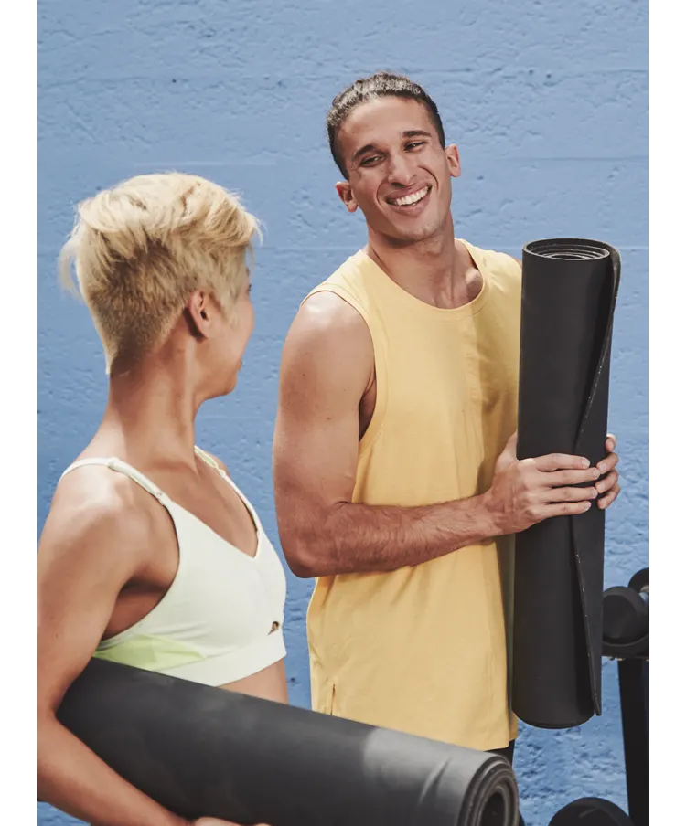
Sporten op jouw manier
Geef je routine een boost met onze groeiende
bibliotheek vol work-outs onder leiding
van onze beste Nike Master Trainers. Met NTC
heb je toegang tot meer dan 200 gratis
work-outs gericht op kracht, conditie,
yoga en mobiliteit, voor je buikspieren,
armen, schouders, bilspieren en benen.
De sessies variëren van 5 tot 50 minuten en
zijn ontworpen om resultaten te kunnen zien
en voelen.
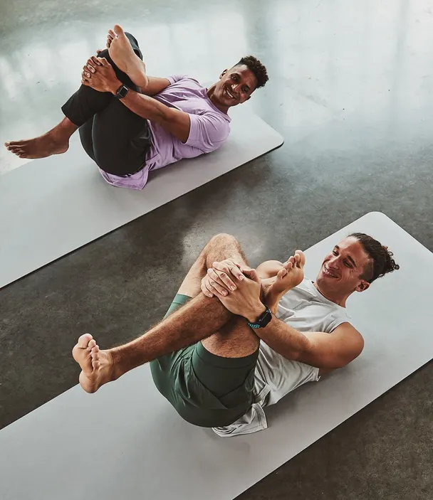
Yoga
Cardio en HIIT
Krachttraining
Mobiliteit
Verbeter lenigheid en kracht met onze yoga- flows.
Boost je conditie met HIIT en cardio.
Wordt sterker met gerichte krachttrainingen
Werk aan je lenigheid met mobiliteitstrainingen
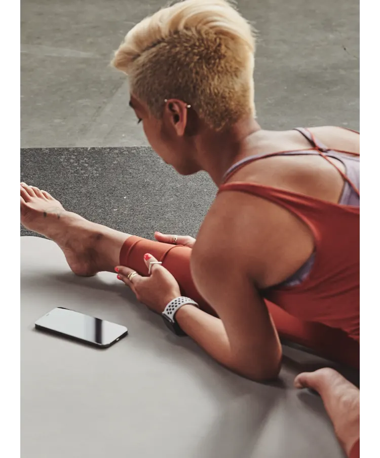
Maak optimaal gebruik van jouw NTC app
Integereer andere apps
Wil je de runs van Nike Run Club app en de work-outs van Nike Training Club app op elkaar aansluiten?
Goed nieuws. Op deze manier kun je ze eenvoudig koppelen:
Open je profiel in een van de apps
Kies ‘Instellingen’
Tik op ‘Partners’
Selecteer de app waarmee je wilt verbinden: 'Nike Run Club' of 'Nike Training Club'.
Gebruik op meerdere apparaten
Wij maken je leven graag makkelijker. Daarom kun je via meerdere apparaten onze programma's volgen, je
work-outs bijhouden en toegang krijgen tot adviezen van experts, bijvoorbeeld over mindfulness, voeding,
herstel en slaap.
iOS
Gebruik de Nike Training Club app op je iPhone, iPad of iPod Touch, om work-outs uit te kiezen en je
doelen bij te houden.
Android
Nike Training Club werkt ook op mobiele telefoons en tablets met Android, dus je neemt de app gemakkelijk
overal met je mee.
Apple Watch
Met NTC voor Apple Watch check je onderweg net zo makkelijk je tijd als je oefeningen.
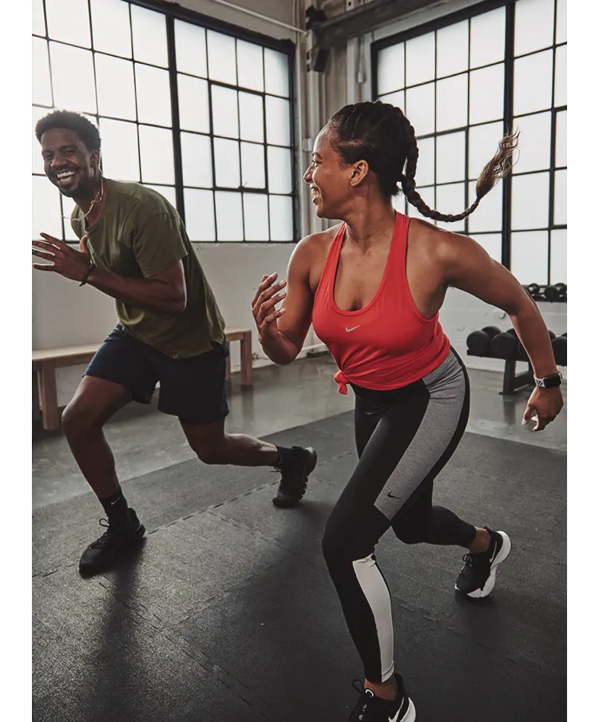
Tevreden sporters
Ik ben zeer tevreden. Afhankelijk van de tijd die je hebt, heb je de keuze uit een korte of lange
work-out, top.
Super app. Het is fijn dat er wordt afgebeeld wat je bij elke oefening moet doen en dat hij tegen je
praat. Soms lijkt het wel alsof het live is.
Fantastische gratis app! Er staan veel work-outs op zoals buik, armen, yoga en flexibiliteit. Echt een
aanrader.
Fijne app! Schema makkelijk aan te passen, ook als de week ineens anders loopt dan verwacht.
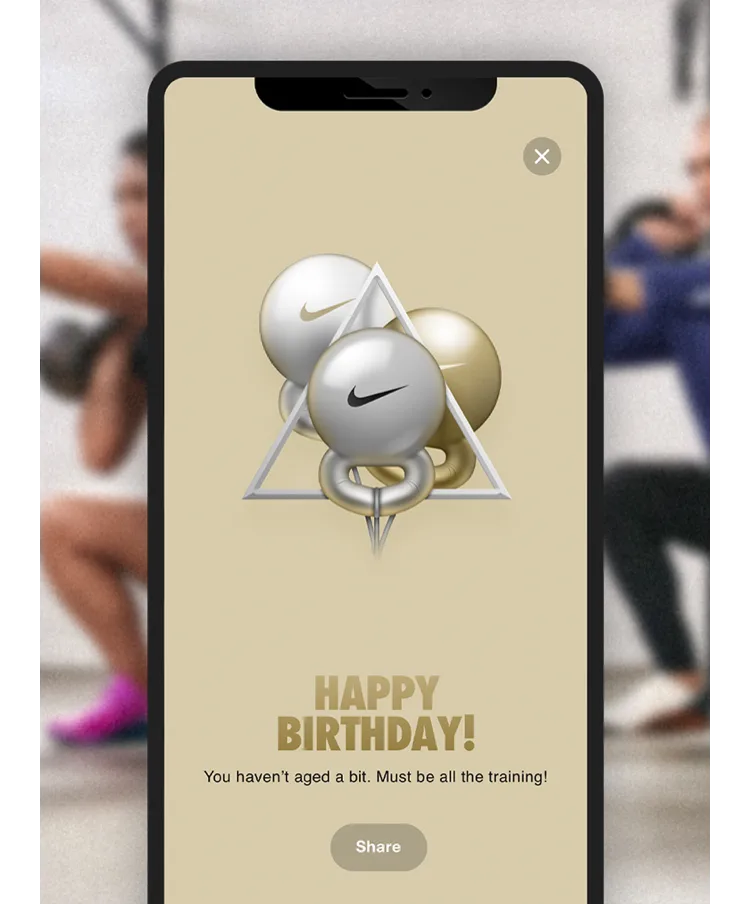
Vier je prestaties
Verdien badges en trofeeën op bijzondere dagen, zoals je verjaardag, nieuwjaarsdag en Halloween. En ook
als je work-outmijlpalen bereikt zoals het voltooien van een aantal work-outs, of van wekelijkse of
maandelijkse reeksen.
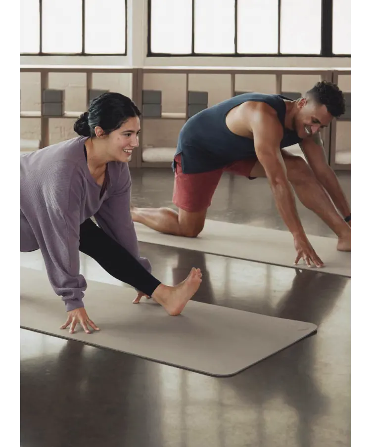
Nike Training Club: meld je nu aan
Download nu de Nike Training Club app en maak een account aan. Ontdek onze work-outs en zorg dat je je
prestaties bijhoudt. Kies uit NTC voor iOS of Android.
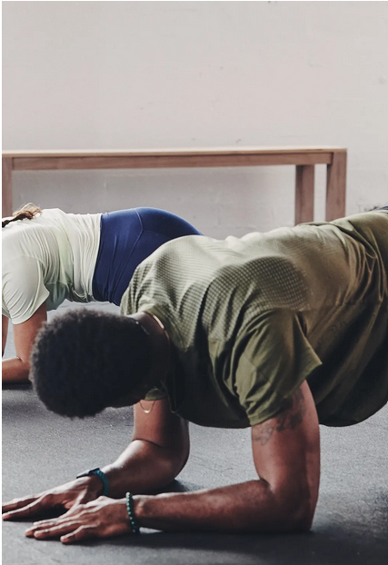
Veelgestelde vragen over de NTC app
Hier vind je antwoorden op enkele veelgestelde vragen over de Nike Training Club:
Waarom synct mijn NTC work-out niet met mijn apparaat?
Als je problemen hebt met het syncen van je work-outs, neem dan contact met ons op voor advies
NTC heeft een groot aantal work-outs met en zonder attributen. Bij sommige werk je alleen met je
lichaamsgewicht, maar er zijn er ook die je het beste kunt doen in de sportschool. Check voor je van
start gaat het video-overzicht om te zien wat voor trainingsgear je nodig hebt.
Hoe log ik in op de NTC app?
Om in te loggen moet je de NTC app downloaden op je apparaat en openen. Tik op ‘inloggen’ en vul je
e-mailadres en wachtwoord in om toegang te krijgen tot je profiel.
Wat is NTC premium?
We hebben het label ‘Premium’ verwijderd, want NTC Premium programma’s, work-outs en tips van experts
zijn nu toegankelijk voor alle Nike Members. Met de nieuwste versie van de app heb je nog steeds toegang
tot alle bonuscontent. Alleen het label ‘Premium’ is verdwenen.
Wat kost de Nike training club app?
De NTC app is gratis te downloaden. Gebruik de app om work-outs te doen, je sportactiviteiten bij te
houden en tips over gezondheid en fitheid te krijgen.
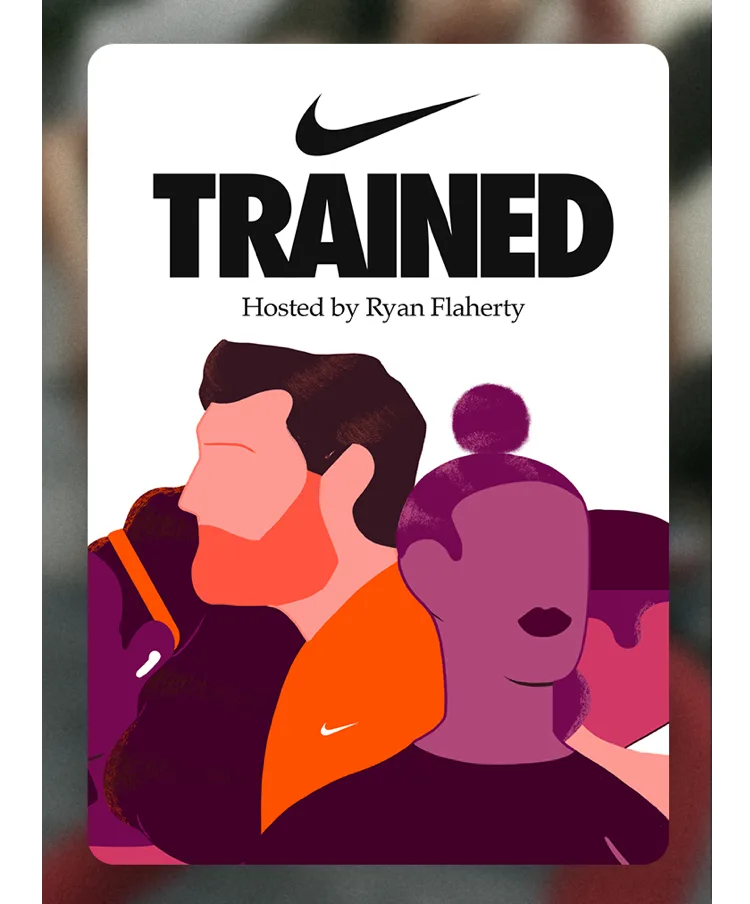
Luister naar de podcast
Trained is een podcast van Nike over het nieuwste op het gebied van holistische fitness, vol interviews
en gesprekken met experts in het vak. Deze content is voorlopig alleen in het Engels beschikbaar.
Probeer ook onze andere apps
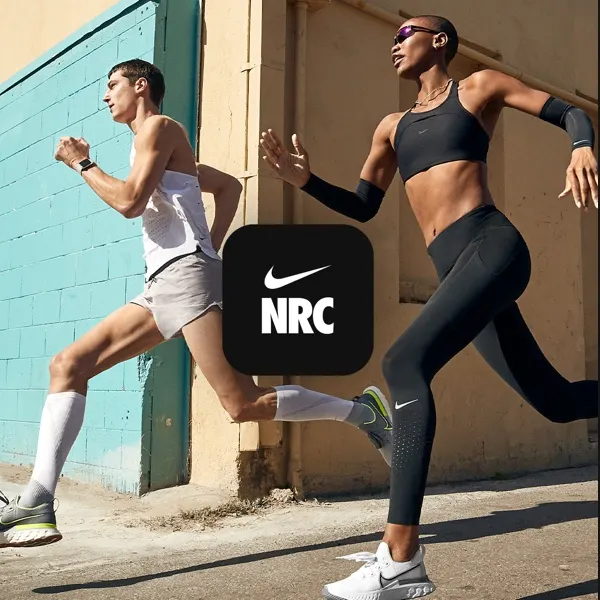
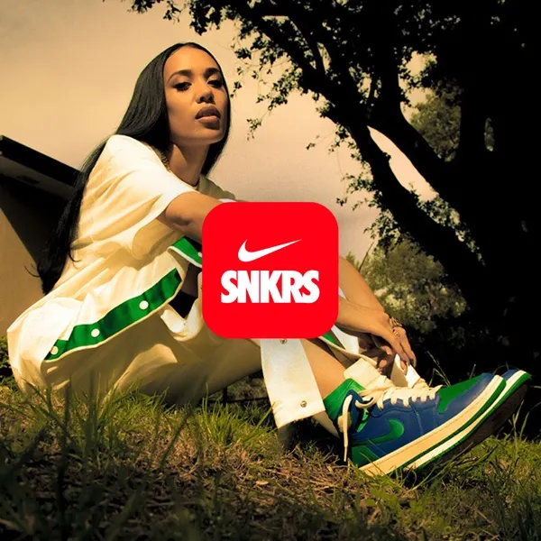
Nike app
Nike Run Club
SNKRS
Alles wat je nodig hebt Het beste uit jezelf te halen.